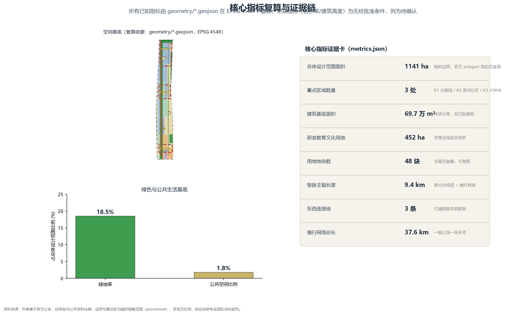

JINGZHANG Intelligence Pulse: Bringing the Century-Old Rail Line Back to Life as the City's Heartbeat
Using the century-old Jing-Zhang railway as the pulse line and AI full-stack independent innovation as the core, this proposal delivers an overall urban design for the AI Innovation Belt from the coordinated research scope down to three key areas: a one-belt, three-core, two-wing spatial structure; a conceptual land-use and building proposal; 12 AI scenario cards; six persona profiles; and four pilgrimage landmarks. All results are marked as provisional boundaries with items pending confirmation.
JINGZHANG Intelligence Pulse: Bringing the Century-Old Rail Line Back to Life as the City's Heartbeat
Design Basis and Source List
The design basis of this proposal falls into four categories, each with an availability status registered in data/source_registry.json and itemised in sources.json, so that background material is never mistaken for an authoritative basis.
The first category is official, formal-ready material: the official qualification announcement, which defines the project purpose, the three-level scope, the industrial objectives, the key areas and the deliverables [source:OFFICIAL-ANNOUNCEMENT]; the design brief, enumeration, permitted design space and data schemas shipped with the site package [source:SITE-PACKAGE]; and the agent taskbook, which sets the three positioning statements, five functions, three districts and two wings, six agent tasks and boundary clauses [source:AGENT-TASKBOOK]. The formal design-depth basis adopts the Urban Design Administrative Measures [source:MOHURD-URBAN-DESIGN-MEASURES], the Measures on the Formulation and Approval of Regulatory Detailed Plans for Cities and Towns [source:MOHURD-CONTROL-DETAILED-PLANNING], and the Land Use Sea Use Classification Guide for Territorial Spatial Survey, Planning, and Use Control (2023) [source:MNR-LAND-USE-CLASSIFICATION-GUIDE]; the mapping is recorded line by line in standard_matrix.json.
The second category is processed navigation-layer material: PROCESSED-FACT-PACK navigates the agent without adding new authoritative basis [source:PROCESSED-FACT-PACK].
The third category is provisional clue material: the provisional coarse boundary of the site package [source:BOUNDARY-SOURCE] and the provisional key-area boundary [source:KEY-AREA-SOURCE] are used for working comparison only, not as official red lines or precise areas, and are explicitly labelled as inferred from public material.
The fourth category is background research reference: a global review of AI innovation ecosystem cases [source:ECOSYSTEM-CASE-REVIEW], used only as research reference for spatial and operational mechanisms, not as the current state of, or a commitment about, any park or enterprise.
Together with assumptions.json (9 assumptions), compliance_matrix.json (23 task items), standard_matrix.json (6 standards) and design_depth_matrix.json (15 depth items), the basis forms a complete evidence chain. The body text links them with machine-readable references [source:...], [standard:...], [depth:...], [data:...] and [metric:...], corresponding to the official master standard [standard:PROJECT-OFFICIAL-ANNOUNCEMENT] and the agent taskbook standard [standard:PROJECT-AGENT-OPEN-CALL-TASKBOOK].
All spatial recommendations are conceptual proposals and reference schemes for professional teams to develop further. All deliverables are open co-creation suggestions; they do not replace formal planning and do not constitute a government-approved conclusion.

Three-Level Scope Framework
Following the announcement, the proposal establishes a three-level scope working framework that is implemented level by level [depth:three_level_scope_framework].
The first level is the coordinated research scope: the entire Haidian AI Innovation Belt and the Jing-Zhang cultural corridor are the subject, and the working aim is strategic judgement on the coupling of industry, space and scenarios. No precise boundary expression is attempted.
The second level is the overall design scope. This package expresses the overall design scope with a provisional coarse boundary [data:geometry/site_boundary.geojson#SITE-001], with an area of approximately 1,141 hectares, matching the indicator [metric:site_area_sqm]. The scope sits along both sides of the Jing-Zhang heritage park vitality belt, and the working aim is urban design at regulatory-plan depth: a conceptual proposal for spatial structure, land-use parcels, building massing, the slow-mobility network and the blue-green system.
The third level is the key-area scope. Three key areas are identified within the overall scope and receive detailed design [data:geometry/key_areas.geojson#K1] [data:geometry/key_areas.geojson#K2] [data:geometry/key_areas.geojson#K3], matching the indicator [metric:key_area_count].
Boundary handling is the most important premise of this proposal. The submitted boundaries are provisional coarse polygons (geometry_role=provisional_constraint, official_boundary=false), inferred from public material [source:BOUNDARY-SOURCE] [source:KEY-AREA-SOURCE], not official red lines. Therefore all areas and ratios are working values; if the official polygon arrives, land_use must be re-split under the replacement rule and all area-type indicators, including site_area_sqm, the green ratio and the public-space ratio, must be recomputed. The conclusions for the three key areas can only serve as directional design. This treatment is registered in [depth:risk_missing_data] and in the self-check items BOUNDARY_TRUST and KEY_AREAS_TRUST.

Coordinated Research Area: Industry and Future City Research
The coordinated research scope responds to item 1.5(1) of the announcement on a world-class AI innovation ecosystem, three districts and two wings, future AI city form, AI culture, AI+transport, and a continuous green-space system [standard:PROJECT-OFFICIAL-ANNOUNCEMENT].
**Positioning and naming (agent task one: belt-wide overall concept and function coordination).** Following the agent taskbook, three positioning statements are given: a century-old Jing-Zhang cultural belt, an urban AI living experience belt, and an AI convergence innovation belt [source:AGENT-TASKBOOK]. The five functions are: a full-stack independent AI innovation system, a world-class AI innovation ecosystem, a new paradigm of AI+scenario enablement, an intelligent vitality AI city, and global voice in AI governance. The scheme is named "JINGZHANG Intelligence Pulse" ("京张智脉"), taking the century-old rail line as the pulse of the city and AI as its core, advocating that "the century-old rail line becomes the city's heartbeat again". The logo is composed of a north-south pulse curve overlaid on the even rhythm of a rail cross-section, carrying the double metaphor "the rail is the pulse, code is the flow". Logo, typeface and imagery are conceptual placeholders only, expressed as replaceable tokens, and no unlicensed material is used.
**Naming system and visual identity direction (agent task one).** A unified naming system is established: the master brand "京张智脉 / JINGZHANG Intelligence Pulse" with the master slogan above; sub-brands follow a "geography + function" rule, such as Beijing AI Origin Community, Zhongzhigarden AI Independent Innovation Acceleration Area, Dazhongsi AI Industry Cluster Area, and JINGZHANG Pulse festival; functional scenarios are uniformly numbered SC-01 to SC-12. The visual identity direction has three layers: the master logo (pulse curve x rail cross-section), auxiliary graphics (even-rhythm / valve / bridge-truss motifs), and usage rules (no mixing with the cultural identity system, no covering ownership or historical signs). All naming and visual elements are conceptual placeholders using no unlicensed typefaces, images or trademarks [source:AGENT-TASKBOOK].
**AI governance and rule-making voice (fifth function).** Facing the announcement theme of global voice in AI governance [standard:PROJECT-OFFICIAL-ANNOUNCEMENT], "governance" is the landing point of the fifth function: an AI governance experiment belt along the pulse line, with scenario ethics review, data minimisation, human review and citizen participation review as its content (see SC-08 and the privacy boundaries of each scenario card [source:AGENT-TASKBOOK]), shifting governance rules from ex-post review to mechanisms that can be piloted in advance and re-reviewed in operation; together with governance-rule exhibitions and an annual AI governance dialogue, it forms a topic venue open to the world. Governance mechanisms and rule displays are conceptual directions and are not stated as established regulatory arrangements or government decisions.
**Spatial structure judgement.** The overall spatial structure is "one belt, three cores, two wings, multiple points, one ring": the belt is the JINGZHANG Intelligence Pulse spine (a north-south green spine and slow-mobility backbone of about 9.4 km [metric:design_north_south_spine_length_m]); the three cores are the three key areas, Zhongzhigarden AI Independent Innovation Acceleration Area, Beijing AI Origin Community and Dazhongsi AI Industry Cluster Area [depth:overall_spatial_structure]; the two wings are the Zhongguancun technology-services wing and the Xiaoyue River scenario-enablement wing; the multiple points are where the 12 AI scenario cards land on the urban interface; the one ring is the blue-green slow-mobility ring linking the three cores and the waterfront green belts [metric:design_slow_mobility_network_length_m]. This structure corresponds layer by layer to the land use [data:geometry/land_use.geojson#LU-001], roads [data:geometry/roads.geojson#ROAD-001], green space [data:geometry/green_space.geojson#GREEN-001] and public space [data:geometry/public_space.geojson#PUBLIC-001] layers.
**East-west stitching and north-south through-linking concept strategy (agent task four).** The Jing-Zhang railway was once a line that divided the city into east and west. This proposal takes "stitching" as its core conceptual strategy: the green spine and the blue-green slow ring stitch the east and west districts together, three east-west connectors open cross-pulse links [metric:design_east_west_connector_count], and ground crossings, slow-mobility bridges and accessible ramps repair the pedestrian links severed by the rail, so the heritage park vitality belt also becomes a public corridor shared by both wings. In the north-south direction, the pulse spine runs through about 9.4 km [metric:design_north_south_spine_length_m], linking the three cores, heritage nodes and waterfront green belts into a continuous public backbone. The stitching and through-linking are conceptual strategies and do not reach conclusions on bridges, tunnels, underground space or engineering feasibility [depth:overall_spatial_structure] [depth:traffic_rail_slow_parking].
**Ecosystem cases (agent task two: full-stack independent AI innovation and world-class ecosystem).** Based on a public-knowledge review of seven global cases [source:ECOSYSTEM-CASE-REVIEW]: (1) Silicon Valley's Stanford Research Park and venture-capital corridor proves a "university-capital-enterprise" loop; (2) Boston's Kendall Square proves that a single industrial park can transform into a mixed, job-housing, high-encounter neighbourhood; (3) London King's Cross proves a railway-heritage district can carry both cultural memory and innovation industry; (4) Berlin Adlershof proves science cities and residential districts can share public facilities; (5) Shenzhen Nanshan Science and Technology Park proves open scenarios and hardware supply chains nurture each other; (6) Hangzhou Future Sci-Tech City proves scenario-based investment attraction and digital-economy agglomeration; (7) Seoul DMC proves media and AI content agglomeration. These translate into three mechanisms for this proposal: upgrading "enterprise-to-enterprise" into an "enterprise-developer-government-university-citizen" co-creation loop; upgrading "functional zoning" into "functional beads strung along the pulse"; and upgrading "one-off investment attraction" into "open scenarios + event operations + continuous conversion". The three-district two-wing loop required by the taskbook: the Origin Community exports talent and open-source culture, Zhongzhigarden exports compute and engineering, Dazhongsi exports industrial support and urban services, the Zhongguancun wing exports technology services, and the Xiaoyue River wing exports scenario trials; the five are each other's inputs and outputs.
**AI innovation ecosystem map (agent task two).** The global case review is converted into a landable ecosystem map with six actor types and three flows. The actors are universities and research institutes, AI enterprises, developers and open-source communities, park and operations organisations, government and public services, and citizens and scenario users. The flows are the talent flow (Origin Community output to Zhongzhigarden engineering), the compute flow (shared-compute street to scenario testing), and the data-and-scenario flow (public/authorised scenarios to product iteration). The map lands item by item in the three districts and two wings: Zhongzhigarden carries "compute + engineering", the Origin Community carries "talent + open source", Dazhongsi carries "industrial support + urban services", the Zhongguancun wing carries "technology services", and the Xiaoyue River wing carries "scenario trials", corresponding to the R&D parcel [data:geometry/land_use.geojson#LU-012] and the community-service parcel [data:geometry/land_use.geojson#LU-020], with spatial mechanisms in [depth:overall_spatial_structure] and case evidence in [source:ECOSYSTEM-CASE-REVIEW]. The actors, flows and locations are conceptual illustrations and do not constitute a list of enterprises, investment amounts, output values or policy commitments [source:AGENT-TASKBOOK].
**Eight mechanisms: land, space, industry, capital, talent, compute, data and scenarios (agent task two).** Eight conceptual mechanisms support the full-stack independent innovation system. Land: stock renewal and function replacement first. Space: the green spine and the three cores lead agglomeration. Industry: "leading enterprises + developer communities + scenario enterprises" coupling. Capital: a direction of market capital combined with public funding, without specific amounts or commitments. Talent: talent housing, education and community services. Compute: shared-compute street coordinated with edge compute. Data: public and authorised data under the minimisation principle. Scenarios: open scenarios with reversible pilots rolled out. The Zhongguancun technology-services wing supports the three cores and two wings with financing matchmaking, intellectual property, compute and compliance services, and is the concrete carrier of the "technology services" flow. All eight mechanisms are conceptual directions and are not established industry-attraction, funding or policy arrangements [source:AGENT-TASKBOOK] [depth:overall_spatial_structure].
**Cultural narrative (agent task five).** The Jing-Zhang railway was the first trunk line built independently by China. The century-old rail is both a transport memory and the starting point of China's independent-innovation spirit. The proposal organises the narrative through five cultural motifs, "track, station, bridge, valve, code": the track corresponds to the green spine, the station to the converted station nodes, the bridge to the pedestrian bridges over the green belt, the valve to translating the railway "running timetable" into "urban rhythm", and the code to Zhongguancun's code and open-source spirit. Together with the heritage park vitality belt, Zhongguancun's innovation culture and the developer community, this narrative forms cultural threads that can be toured, experienced and inherited, as detailed in the pilgrimage landmarks of the blue-green chapter.
Overall Design Area: Urban Renewal and Regulatory-Plan-Level Urban Design
The overall design scope responds to item 1.5(2) of the announcement, reaching urban design at regulatory-plan depth over approximately 1,141 hectares [metric:site_area_sqm], and honestly records the absence of confirmed regulatory-plan conditions as an item pending confirmation.
**Industrial objective and functional layout.** The industrial objective is "full-stack independent innovation + world-class ecosystem", and the functional layout follows the principle "green along the pulse, cores gathering toward the pulse, wings spreading industry, multiple points for living" [depth:overall_spatial_structure]. The land-use layout is in [data:geometry/land_use.geojson#LU-001]: a green spine about 200 m wide forms the central axis; east of the spine the Zhongzhigarden area is dominated by R&D and industrial support; the Origin Community on the west wing is dominated by R&D, education, culture and mixed living; the southern Dazhongsi area is dominated by industry agglomeration, commerce and public culture. The whole site contains 48 land-use parcels [metric:land_use_parcel_count], of which R&D, education and culture total about 452 hectares [metric:research_development_land_area_sqm], matching the industrial-space supply to the "full-stack innovation" objective.
**Development intensity and building height.** No approved floor-area ratio, building density, building height, setback or road red-line conditions appear in the public material. The proposal therefore gives no legal development-intensity conclusion and lists it as pending confirmation [depth:development_intensity_controls]. What the proposal offers is a height logic: buildings step back from, and lower toward, the green spine; the three core areas may form landmark massing; the periphery transitions gradually. This logic is expressed in [depth:height_massing_character] and the massing illustration [data:geometry/buildings.geojson#BLDG-001].
**Existing-condition diagnosis.** Current conditions are judged from public clues: the existing Jing-Zhang railway heritage, the Qinghe and Xiaoyue rivers, existing rail stations and roads, the Dazhongsi and along-line cultural-relic and culture-museum resources, and extensive stock parks and institutional land [depth:existing_conditions_diagnosis]. Existing constraints are expressed in [data:geometry/constraints.geojson#CON-001] (heritage), CON-002 (existing rail), CON-004 (Qinghe) and CON-005 (Xiaoyue River). Engineering-condition drawings, ownership and building-condition data are missing and are recorded as data gaps.
**Standard implementation.** This level implements the coordination of spatial structure, character and public space required by the Urban Design Administrative Measures [standard:MOHURD-URBAN-DESIGN-MEASURES], and the land-use, intensity and supporting-facility requirements of regulatory planning [standard:MOHURD-CONTROL-DETAILED-PLANNING]; statutory land-category determination awaits confirmation by regulatory planning and the competent authority [standard:MNR-LAND-USE-CLASSIFICATION-GUIDE].
Detailed Design of Key Areas
Each of the three key areas forms a readable mini-scheme covering "positioning + spatial structure + building renewal + transport and slow mobility + public space + AI scenarios + implementation risk". Their boundaries are all provisional polygons [data:geometry/key_areas.geojson#K1] [data:geometry/key_areas.geojson#K2] [data:geometry/key_areas.geojson#K3], so the conclusions can only serve as directional design [depth:three_key_area_detailed_design].
**K1 Zhongzhigarden AI Independent Innovation Acceleration Area.** Positioned as the "accelerator from model to product", focused on training, evaluation, engineering and acceleration services. The spatial structure uses the "green spine + shared-compute street" as its skeleton; building renewal is mainly function replacement, adding shared laboratories and test workshops; transport connects directly along the pulse spine with an internal slow loop; public space sets the Zhongzhigarden Pulse Plaza [data:geometry/public_space.geojson#PUBLIC-003]; AI scenarios include intelligent-industry testing and result-release space; the main implementation risk is the uncertainty of industrial support and operations capacity.
**K2 Beijing AI Origin Community.** Positioned as the "origin of talent and open-source culture", focused on the talent community, incubation, education and international developer exchange. The spatial structure is organised around "green belt + community lane houses", preserving the existing texture of campuses and institutional courtyards; building renewal is mainly retention-and-strengthening, inserting young-talent apartments and community services [data:geometry/buildings.geojson#BLDG-008]; transport prioritises rail connection and slow mobility; public space sets the Origin Star-Rail Plaza [data:geometry/public_space.geojson#PUBLIC-002]; AI scenarios include open-source co-creation, AI education labs and entrepreneur services; the main implementation risks are complex ownership and multiple renewal actors.
**K3 Dazhongsi AI Industry Cluster Area.** Positioned as the "living room of industry and urban public life", focused on industry agglomeration, business services, cultural experience and the public-transport hub. The spatial structure is organised around "station-city integration + culture-commerce mixed blocks"; building renewal is mainly mixed development, inserting cultural facilities and talent services; transport uses the existing rail station for integrated interchange [data:geometry/roads.geojson#ROAD-003]; public space sets the Dazhongsi Zhihui Plaza [data:geometry/public_space.geojson#PUBLIC-001]; AI scenarios include the Dazhongsi AI City Living Room and public-safety operations review; the main implementation risk is the interface between station-area integrated development and heritage-control management.
**Dazhongsi intelligent-native consumption and business scenarios (agent task four).** In the Dazhongsi station-city integrated area, intelligent-native new-business directions are proposed: intelligent-native retail (experience stores with AI selection and self-checkout), digital business experience (data visualisation and AI analysis display), AI lifestyle consumption (integrated smart mobility, health and life services), and enterprise-facing business and meeting services. The businesses are introduced reversibly, "pilot first, then scale" [data:geometry/public_space.geojson#PUBLIC-001], with no unauthorised brands, enterprise names or established investment-attraction arrangements; all are conceptual directions [source:AGENT-TASKBOOK].
The three areas jointly serve six persona profiles (see the AI scenarios chapter), with the indicator scope in [metric:key_area_count] and drawings in the A3/A0 portfolios.

AI Innovation Ecosystem, Personas, and AI+ Scenarios
This level responds to item 1.5(1) of the announcement on AI culture, society, city and industrial ecosystem [standard:PROJECT-OFFICIAL-ANNOUNCEMENT], and expands agent task three (scenario cards) and task two (ecosystem).
**Six persona profiles.** (1) Developers and open-source co-builders: AI engineers and open-source community contributors who need low-cost co-creation space, frequent technical exchange and scenario-testing opportunities; (2) entrepreneurs and founding teams: who need policy navigation, compute and open scenarios, and IP and compliance services; (3) researchers at universities: who need laboratories, compliant data interfaces and result-conversion channels; (4) operators in parks and events: who need event organisation, safety review and public-space management tools; (5) residents and commuters in surrounding communities: who need health services, slow-mobility safety, everyday public life and intergenerational-friendly space; (6) visitors and tour-goers: who need traceable cultural tours, accessible routes and AI experiences.
**Public interest and inclusion mechanisms.** Age-friendly design and accessibility: slow-mobility systems and public space are designed to accessibility standards, and SC-11 serves the elderly, children and wheelchair users [depth:traffic_rail_slow_parking]. Intergenerational public life: the Origin Community sets intergenerational shared community services and public space, avoiding spatial separation, with public art and memory exhibitions open to residents. Public participation: public opinion enters safety review, scenario pilots and operations evaluation under a "co-build, co-govern, co-share" mechanism. Public resources: talent housing, community services 0702 and public culture are configured along the pulse to guarantee basic public-service accessibility [data:geometry/land_use.geojson#LU-025]. All the above are conceptual directions [depth:blue_green_public_space].
**Twelve AI scenario cards.** Each card states the spatial location, the personas served, the operational data, the privacy boundary, human review, the operations actor, the visualisation layer and the risks. SC-02, SC-05 and SC-07 are AI industry test-and-verification scenarios and must be preconditioned on human review, privacy boundaries and reversible pilots; immature technology is not written as already fully deployable.
- **SC-01 Intelligence-Pulse Shared Dock (developer co-creation space)**: Zhongzhigarden Pulse Plaza; serves developers; operational data are public events and booking information; privacy boundary is anonymous by default; human review covers event safety and content; operations actor is park operator + developer community; layer
[data:geometry/public_space.geojson#PUBLIC-003]; risk is content review and order. - **SC-02 Intelligent Industry Test Street (low-speed autonomous-mobility testing)**: a local stretch of the Xiaoyue River scenario-enablement wing; serves AI enterprises and testing teams; operational data are public road conditions and authorised operations data; privacy boundary is not collecting personally identifiable imagery; human review covers transport, safety, operations and public-participation teams
[depth:traffic_rail_slow_parking]; operations actor is test park + transport department; layer[data:geometry/roads.geojson#ROAD-007]; risk is human-machine mixing, noise and public acceptance, corresponding to the registered scenariorobot-delivery-low-speed. - **SC-03 Full-Stack Independent Innovation Corridor (industry-chain map)**: R&D parcels in the Zhongzhigarden area; serves AI enterprises and researchers; operational data are public industry-chain information; privacy boundary is voluntary enterprise disclosure; human review covers industry and data compliance; operations actor is park operator; layer
[data:geometry/land_use.geojson#LU-012]; risk is outdated data. - **SC-04 Jing-Zhang AI Cultural Guide**: stations and heritage nodes along the pulse line; serves tourists, students, residents and event participants; operational data are public historical material, authorised images and text, and human-curated interpretation; privacy boundary is not collecting location-behaviour profiling; human review covers historical accuracy, copyright and facts; operations actor is the cultural operations team; layer
[data:geometry/green_space.geojson#GREEN-001]; risk is historical errors and material copyright, corresponding to the registered scenarioai-cultural-guide. - **SC-05 AI+Traffic and Slow-Mobility Assessment (lightweight pilot evaluation)**: along the heritage park and surrounding districts; serves residents, students, tourists and commuters; operational data are public road data, public rail-station data and manual surveys; privacy boundary is aggregate statistics only; human review covers planning, transport, accessibility and public-participation procedure; operations actor is transport department + public-participation team; layer
[data:geometry/roads.geojson#ROAD-001]; risk is unrepresentative data and automated judgement replacing field surveys, corresponding to the registered scenarioai-traffic-walkability. - **SC-06 Origin Community Entrepreneur-Service Copilot**: lane-house spaces in the Origin Community; serves AI enterprises, founding teams, developers and park operators; operational data are public policies, public service catalogues and human-maintained Q&A; privacy boundary is not storing unauthorised enterprise information; human review covers policy, law, IP and data compliance; operations actor is community operator + legal team; layer
[data:geometry/land_use.geojson#LU-020]; risk is over-interpretation of policy, corresponding to the registered scenarioenterprise-service-copilot. - **SC-07 Pre-Station Low-Speed Shuttle and Last-Mile**: the Dazhongsi and Qinghe pre-station areas; serves commuters and visitors; operational data are public road information and authorised operations data; privacy boundary is not collecting personal profiling; human review covers safety and operational responsibility; operations actor is transport department + operations enterprise; layer
[data:geometry/roads.geojson#ROAD-002]; risk is interchange integration and safety. - **SC-08 AI+Public-Safety and Event Operations Review**: major events, night-time public space and crowd organisation; serves maintainers, operations teams and public-participation teams; operational data are public event information, manual inspection records and authorised feedback; privacy boundary is minimisation, no surveillance profiling; human review covers public safety, operations and accessibility; operations actor is operations team + police and emergency; layer
[data:geometry/public_space.geojson#PUBLIC-001]; risk is a tendency toward over-surveillance, corresponding to the registered scenariopublic-safety-operations-review. - **SC-09 AI+Health-Service Navigation**: public-space, park and community interfaces; serves park youth, residents and tourists; operational data are public public-service information and a human-compiled service catalogue; privacy boundary is not collecting personal health information; human review covers medical, legal and data security; operations actor is community health service + operator; layer
[data:geometry/land_use.geojson#LU-030]; risk is overstepping medical advice, corresponding to the registered scenarioai-health-service-navigation. - **SC-10 Green-Spine Ecological Sensing and Maintenance**: the Qinghe waterfront green belt and the green spine; serves maintainers and the public; operational data are public environmental data and authorised sensor data; privacy boundary is environmental-data aggregation; human review covers ecological control; operations actor is the landscape department + operator; layer
[data:geometry/green_space.geojson#GREEN-002]; risk is data reliability. - **SC-11 Slow-Mobility Safety and Accessibility Companion**: road intersections and interchange nodes; serves the elderly, children, wheelchair users and tourists; operational data are public road networks and manual accessibility surveys; privacy boundary is not locating individuals; human review covers accessibility and public participation; operations actor is transport department + community; layer
[data:geometry/roads.geojson#ROAD-010]; risk is route suggestions being mistaken for approved schemes. - **SC-12 Dazhongsi AI City Living Room**: the station-city integrated space in the Dazhongsi area; serves residents, tourists and enterprises; operational data are public event information and authorised feedback; privacy boundary is anonymous experience; human review covers content and cultural compliance; operations actor is the cultural operations team; layer
[data:geometry/public_space.geojson#PUBLIC-001]; risk is over-entertainment.
The scenario cards are presented in a readable form in the body and registered in the compliance matrix and the visualisation page; the privacy boundaries, human review and operations mechanisms of operational data follow [source:AGENT-TASKBOOK] and assumptions A-SCENARIO-001 and A-PRIVACY-001.
**Scenario-space-operation mapping (agent task three).** The 12 scenario cards are grouped by "spatial location, layer, operations actor, mechanism" into five operational groups, forming a reviewable mapping:
| Scenario group | Spatial location | Layer | Operations actor and mechanism | | --- | --- | --- | --- | | SC-01/SC-03 Innovation co-creation | Zhongzhigarden | public space / R&D parcels | Park operator + developer community, open booking | | SC-02/SC-05/SC-07 Test and verification | Xiaoyue River wing / heritage park / pre-station | road layers | Transport department + operations enterprise, reversible pilots | | SC-04/SC-12 Cultural experience | along-line stations / Dazhongsi | green space / public space | Cultural operations team, curation review | | SC-06/SC-09 Service navigation | Origin Community / neighbourhoods | community-service parcels | Community operator + professional teams, human review | | SC-08/SC-10/SC-11 Safety-health ecosystem | public space / green belt / intersections | public space / green space / roads | Operations team + competent department, data minimisation |
The layer evidence of the mapping is in each scenario card, e.g. [data:geometry/roads.geojson#ROAD-007] (test street), [data:geometry/public_space.geojson#PUBLIC-003] (pulse plaza), [data:geometry/green_space.geojson#GREEN-002] (waterfront green belt), corresponding to [depth:traffic_rail_slow_parking] and [depth:blue_green_public_space]; all are conceptual operational directions and are not stated as approved operations.
Land Use, Building Scale, and Retain-Renovate-Demolish Strategy
The land-use layout adopts the classification codes of the Land Use Sea Use Classification Guide for Territorial Spatial Survey, Planning, and Use Control (2023) [standard:MNR-LAND-USE-CLASSIFICATION-GUIDE], implementing the land-use layout depth item [depth:land_use_layout] and [data:geometry/land_use.geojson#LU-001]: park green space 1401 forms the green spine and the waterfront green belts; research land 0802 forms the wings and R&D parcels; culture 0803 and education 0804 serve talent and communities; residence 0701 and community services 0702 form the west-wing living clusters; commerce 05 is laid out at nodes such as Dazhongsi; protective green space 1402 runs along existing rail and roads. The whole site has 48 parcels covered without gaps or overlaps [metric:land_use_parcel_count], with a total area aligned to [metric:site_area_sqm], recomputable under EPSG:4548.
Building footprints are illustrated with 19 massing blocks [data:geometry/buildings.geojson#BLDG-001], covering AI R&D, laboratories, culture, incubators, transport hubs, talent apartments, education, community services, mixed functions, offices, retail and residence, with a total footprint of about 697,000 square metres [metric:building_footprint_area_sqm]. The blocks do not overlap green space, public space or rivers; they are an evidence chain of "spatial supply", not approved buildings or engineering drawings.
Retain-renovate-demolish classification follows three conceptual intensities: retain-and-strengthen (existing campuses, heritage and institutional courtyard textures, e.g. the Origin Community), function replacement (stock parks converting to AI industry and public services, e.g. Zhongzhigarden and Dazhongsi), and adaptive new construction (new R&D, education, culture and talent-housing parcels). [depth:retain_renovate_demolish] makes clear that the classification is conceptual; the parcel-by-parcel retain-renovate-demolish decision needs ownership, existing-building and regulatory-plan confirmation before further development. Statutory development intensity (floor-area ratio, density, height) and building area have no approved conditions and are listed as pending confirmation [depth:development_intensity_controls]; the spatial-supply and operations strategies are in the A3/A0 portfolios and the scenario cards.
Transport, Rail, Municipal Infrastructure, and Public Services
The transport system is organised as "one axis, three connectors, one ring, multiple branches" [data:geometry/roads.geojson#ROAD-001] [depth:traffic_rail_slow_parking]: the axis is the north-south pulse spine linking the three cores and the heritage park vitality belt; the three connectors are three east-west connector lines opening cross-pulse links, matching the indicator [metric:design_east_west_connector_count]; the ring is the blue-green slow ring connecting the Qinghe, Xiaoyue River and the green belt; the branches are park roads and local access roads. The slow-mobility network totals about 37.6 km [metric:design_slow_mobility_network_length_m], with the spine about 9.4 km [metric:design_north_south_spine_length_m]. Rail interchange is organised around existing stations (Dazhongsi, Qinghe directions), with pre-station low-speed shuttle and interchange space [data:geometry/roads.geojson#ROAD-002]. Parking and non-motorised vehicles are organised inside hubs and parcels, with pedestrian priority on both sides of the green belt.
Municipal and new infrastructure [depth:municipal_new_infrastructure]: edge compute and distributed energy are embedded in park parcels as conceptual systems, supporting AI scenarios with reversible lightweight pilot infrastructure; digital municipal services (network sensing, energy monitoring) are an overlay on conventional municipal infrastructure, not a substitute for professional engineering calculation. Public services are laid out in two tiers, "three cores-neighbourhood": the cores provide innovation-service platforms, talent life services and public culture; neighbourhoods provide community services 0702 along both sides of the pulse [data:geometry/land_use.geojson#LU-025]. Road alignments, rail alignments, bridge-and-tunnel works and utility lines are not provided and are listed for professional deepening [depth:risk_missing_data].

Blue-Green Network, Public Space, and Urban Character
The blue-green system is organised as "one vein, two belts, one ring" [depth:blue_green_public_space]: the vein is the green spine about 200 m wide [data:geometry/green_space.geojson#GREEN-001], the ecological and public-life backbone of the whole belt; the two belts are the Qinghe waterfront green belt [data:geometry/green_space.geojson#GREEN-002] and the Xiaoyue River waterfront green belt [data:geometry/green_space.geojson#GREEN-003], plus the southern green wedge [data:geometry/green_space.geojson#GREEN-004]; the one ring is the slow ring linking the three cores and the waterfront. The green ratio is about 18.5% [metric:green_ratio] and the public-space ratio about 1.8% [metric:public_space_ratio]; both are design targets recomputed from the submitted layers and require official mapping for the statutory green ratio and plaza land. Public space is anchored by five plazas and parks [data:geometry/public_space.geojson#PUBLIC-001] to PUBLIC-005, composited with the slow-mobility system, rail interchange and cultural nodes.
**Pilgrimage landmarks (agent task four: AI public space, intelligent-native new business and pilgrimage landmarks).** Four AI pilgrimage landmarks or honour-display nodes are proposed. First, the Origin Star-Rail Plaza [data:geometry/public_space.geojson#PUBLIC-002], commemorating the "end of the starting point" of the Jing-Zhang with the "rail timetable" imagery and carrying the open-source community honour wall. Second, the Dazhongsi AI City Living Room [data:geometry/public_space.geojson#PUBLIC-001], letting AI converse with urban history. Third, the Zhongzhigarden Pulse Plaza [data:geometry/public_space.geojson#PUBLIC-003], a "pilgrimage plaza" where developers and entrepreneurs release results. Fourth, the Jing-Zhang Memory Plaza [data:geometry/public_space.geojson#PUBLIC-005], exhibiting the century-old rail and Zhongguancun innovation memory. The landmarks connect to the heritage park, Zhongguancun innovation culture, the developer community and the public-space system. Landmarks, signage, logo, typeface, imagery and person marks are conceptual suggestions; unlicensed material does not enter the formal deliverables, and conceptual landmarks are not stated as approved construction.
**Public-space component library (agent task four).** For the five plazas and parks [data:geometry/public_space.geojson#PUBLIC-001] to PUBLIC-005, a composable, replaceable and manageable component library is provided: seating-and-shade modules, small release-and-display stages, honour-display modules, intelligent wayfinding terminals, lighting-and-paving modules, and greening-and-rainwater modules. The components use "pulse-standard parts" with unified scale and materials (warm grey, timber, light metal), then combine by differentiated zone: the Origin Community stresses education and co-creation, Zhongzhigarden stresses release and testing, and Dazhongsi stresses culture and consumption, all combined to age-friendly, accessible and intergenerational standards. All components are conceptual illustrations with reversible conversion and involve no ownership or engineering conclusions; the mechanism is in [depth:blue_green_public_space].
**Honour-display system (agent task four).** Linked to the pilgrimage landmarks, an honour-display system provides public expression of the results of talent, enterprises and developers: the Origin Community sets an open-source-contributor honour wall, Zhongzhigarden an annual-result milestone wall, and Dazhongsi an industrial and public-service contribution display. Display content is organised in an authorised, de-identified way, collecting no personal data and displaying no unauthorised portraits, trademarks or enterprise marks; the system lands on three carrier types, "honour wall + milestone + public screen", all as conceptual placeholders [data:geometry/public_space.geojson#PUBLIC-002] [data:geometry/public_space.geojson#PUBLIC-003] [depth:blue_green_public_space], and does not constitute approved construction or a commendation conclusion about any person or enterprise.
**Wayfinding, signage and symbol system direction (agent task five).** The signage system continues the five cultural motifs "track, station, bridge, valve, code", distinct from and not confused with the belt-wide logo system [source:AGENT-TASKBOOK]: area-level signage for the pulse spine and the three core entrances, path-level signage for slow mobility and rail interchange, and node-level signage for the pilgrimage landmarks and plazas. The symbols use a unified language of "pulse curve + even rail rhythm", presented bilingually with visual and tactile alternative expressions. The wayfinding direction corresponds to the pulse spine [data:geometry/roads.geojson#ROAD-001] and the green spine [data:geometry/green_space.geojson#GREEN-001]; it is only a conceptual direction and constitutes no brand authorisation.
The urban character follows the control logic "calm base colour, bright pulse, light accents": buildings use warm grey and timber as the base palette echoing the industrial memory of the rail, public interfaces use modern glass and light metal to stress the innovation attribute, and over-entertainment is avoided. Roof forms stress the fifth façade along the green belt and rooftop public space, with massing stepping back and lowering along the pulse; the character zoning and control logic are in [depth:height_massing_character].
**Spatial cultural-expression carriers (agent task five).** The five motifs "track, station, bridge, valve, code" are translated into operable spatial-expression carriers: paving and edges use the even-rail-rhythm motif; lighting along the pulse spine uses pulse-curve light bands; public art uses station, bridge, valve and code as prototypes distributed at nodes; the signage system carries both wayfinding and narrative functions; digital media (scenario screens, AR cultural guides) act as an overlay connecting online and offline experience [data:geometry/roads.geojson#ROAD-001]. The carriers uniformly follow the principle "restrained, replaceable, not covering historical information", consistent with the urban-character control [depth:height_massing_character] [depth:blue_green_public_space].
Renewal Projects, Implementation Policy, and Phasing
Renewal projects are listed in eight categories: green-spine connection, waterfront blue-green belt restoration, three-core industrial-space renewal, stock-park function replacement, station-area integrated development, talent-housing and community-service gap-filling, slow-mobility and transit interchange improvement, and AI-scenario pilot space. Each category gives the spatial location, dependency conditions, implementation actor and policy suggestion, forming renewal_project_list [depth:renewal_project_list], corresponding to [data:geometry/phasing.geojson#PH-001] to PH-003.
Renewal project list (conceptual classification, not an implementation commitment):
| Project category | Spatial location | Phase | Implementation actor | Policy and mechanism dependency | | --- | --- | --- | --- | --- | | Green-spine connection | north-south spine | PH-001 | district government lead + operator | green-line control, site preparation | | Waterfront blue-green belt restoration | Qinghe / Xiaoyue River waterfront | PH-003 | water + landscape departments | blue line, ecological restoration | | Three-core industrial-space renewal | Zhongzhigarden / Origin / Dazhongsi | PH-002 | park operation + ownership actors | stock renewal, function replacement | | Stock-park function replacement | existing parks in the wings | PH-002 | park + enterprises | industry admission, lease coordination | | Station-area integrated development | Dazhongsi / Qinghe pre-station | PH-002 | transport + rail actors | station-city integration, planning interface | | Talent housing and community-service gap-filling | Origin Community and neighbourhoods | PH-001 | district-level platform | rental-housing policy | | Slow-mobility and transit interchange improvement | three connectors, one ring | PH-001 | transport department | slow-mobility system planning | | AI-scenario pilot space | Xiaoyue River wing and pre-station | PH-001 | operator + scenario enterprises | open scenarios, reversible pilots |
[depth:renewal_project_list] [depth:phasing_implementation], corresponding to [data:geometry/phasing.geojson#PH-001] to PH-003; the phasing, actors and policy dependencies are conceptual arrangements and do not constitute government arrangements.
The phasing corresponds to phasing.geojson [depth:phasing_implementation]: the near term (PH-001, south and central) prioritises green-spine connection, Origin Community service facilities and slow-mobility gap repair, together with lightweight AI-scenario pilots; the mid term (PH-002) prioritises Zhongzhigarden and Dazhongsi industrial-space renewal and station-area integration; the far term (PH-003, north) completes the Qinghe waterfront, the full blue-green ring, smart municipal services and overall operations. The phasing is a conceptual arrangement and does not constitute a government arrangement.
**Long-term operations (agent task six: global AI innovation activity system and long-term operations design).** An annual "JINGZHANG Pulse" festival system is proposed: a spring developer conference, a summer open-source co-build week, an autumn result-release event and a winter global AI innovation dialogue, layered with monthly community open days and public-experience routes. The operations mechanisms include developer-community operations, open-scenario operations, public-experience routes, international communication, and attraction-conversion (event to scenario to space to enterprise landing). All event branding, investment attraction, funding, policy and operations arrangements are conceptual suggestions or deepening directions and are not stated as established government decisions [depth:phasing_implementation]; public participation uses a "co-build, co-govern, co-share" mechanism, with public opinion entering safety review and scenario-pilot evaluation.
**Developer-community operations mechanism (agent task six).** The developer community is the core operational asset that distinguishes this scheme from conventional parks. A three-tier structure and two-venue operations mechanism are proposed: the three tiers are core contributors (open-source repository maintainers and high-frequency contributors), active co-builders (hackathon and open-day participants), and general participation (experience and feedback). The two venues are the online open-source repository (code, data and documentation co-built openly) and offline spaces (Origin Community co-creation space, Zhongzhigarden release space). The mechanism includes the open-source co-build week, monthly open days, a contributor honour system (connected to the honour-display system) and a conversion channel from "results to scenario testing to product iteration" [source:AGENT-TASKBOOK]; all are conceptual directions and are not stated as established event arrangements or as specific enterprise landings already achieved.
**Event brand and communication visual system (agent task six).** The "JINGZHANG Pulse" brand uses "pulse curve + rail timetable" as its core visual, establishing a key visual, monthly theme colours, event posters and digital-communication templates, sharing the visual motifs of the belt-wide logo system while standing independently to avoid confusion; all brand elements are conceptual placeholders using no unlicensed material [source:AGENT-TASKBOOK].
**International communication narrative (agent tasks five and six).** With "from building a railway independently to innovating independently" as the international communication thread, the "independent construction" of the Jing-Zhang railway and the "independent innovation" of Zhongguancun are connected into a narrative that can be told abroad, delivering three sets of content to global developers and AI ecosystem organisations: the starting point (independent railway construction), the relay (Zhongguancun entrepreneurship) and the community (open-source co-building). The communication carriers link with the pilgrimage landmarks, the developer community and the annual activities, and interface with the international attraction-conversion mechanism; all copy and material are conceptual directions [depth:phasing_implementation].
Metrics, Area Recalculation, and Compliance Matrix
All core indicators can be recomputed under the EPSG:4548 projection from geometry/*.geojson and metrics.json [depth:metrics_recalculation]. The design meaning of each indicator is as follows.
The site area is about 1,141 hectares [metric:site_area_sqm], defining the denominator of the overall design scope and of all ratio indicators; it uses the provisional boundary and must be recomputed once the official polygon arrives. The green ratio is about 18.5% [metric:green_ratio], supporting the continuous green living and ecological experience that talent needs and serving as the direct spatial carrier of "making the rail the city's heartbeat". The public-space ratio is about 1.8% [metric:public_space_ratio], corresponding to the five plazas and stations and supporting the frequency of innovation exchange and public life. The pulse spine is 9.4 km long [metric:design_north_south_spine_length_m], there are three east-west connectors [metric:design_east_west_connector_count] and the slow-mobility network totals 37.6 km [metric:design_slow_mobility_network_length_m], together depicting the transport and public-life skeleton of "cross-pulse reachability and along-pulse slow mobility". There are three key areas [metric:key_area_count], corresponding to the cores of the three districts and two wings that most need detailed design. There are 48 land-use parcels [metric:land_use_parcel_count], with R&D, education and culture totalling about 452 hectares [metric:research_development_land_area_sqm], responding to the industrial-space supply of "full-stack independent innovation". The building footprint is about 697,000 square metres [metric:building_footprint_area_sqm], as evidence of spatial supply, not approved buildings. Statutory control indicators such as the floor-area ratio and building height have no approved conditions and are listed as unknown with the reason explained.
On compliance: compliance_matrix.json covers 17 announcement tasks (1.3.1 to 1.5.3.3) and the six agent tasks, 23 items in total, all with non-empty evidence arrays; standard_matrix.json covers 5 mandatory standards and registers 1 optional data gap; design_depth_matrix.json covers 15 mandatory depth items, all with status complete [standard:PROJECT-OFFICIAL-ANNOUNCEMENT] [standard:PROJECT-AGENT-OPEN-CALL-TASKBOOK]. The evidence chain and recalculation relationships are shown in the drawings.
The proposal adopts an AI-enhanced planning workflow: machine-readable evidence-chain references ([source:...], [standard:...], [depth:...], [data:...], [metric:...]) constrain design decisions, EPSG:4548 recomputation guarantees indicator consistency, and scenario cards manage the privacy and human-review boundaries of AI scenarios, forming the closed loop "material classification, evidence constraint, indicator recalculation, risk registration" [depth:metrics_recalculation] [source:AGENT-TASKBOOK]. Under this workflow, every spatial conclusion can be traced back to a layer, indicator or assumption, making it easy for professional teams to review item by item and recompute after official data replaces the provisional input.

Risk, Copyright, and Compliance
**Boundary and data risk.** The site and key-area boundaries are provisional coarse polygons; the official red lines, regulatory-plan conditions, existing buildings, ownership and engineering material are not public, and all related conclusions are conceptual suggestions and reference schemes for professional teams to develop further [depth:risk_missing_data]. Area-type indicators must be recomputed after the official polygon replaces the provisional input.
**Copyright and compliance.** Material use follows the availability classification of data/source_registry.json [source:SOURCE-REGISTRY]; this package contains no personal-privacy data, no non-public spatial data and no unlicensed material; it contains no unauthorised trademarks, typefaces, images, person portraits or copyrighted material; AI generation responsibility is registered by the author in agent.json. The logo and visual elements are conceptual placeholders and constitute no brand authorisation. This package does not fabricate official endorsement, and does not state conceptual suggestions, event ideas or policy mechanisms as established government decisions or implementation arrangements; all deliverables are open co-creation suggestions that do not replace formal planning and do not constitute a government-approved conclusion. Related statements are in report/copyright_statement.md.
**Professional review needs.** Engineering conditions, rail alignments, road alignments, municipal capacity, underground space and investment estimation all need professional deepening [standard:MOHURD-ARCH-DESIGN-DEPTH-2016]; this submission is at the urban-design stage and has not reached construction-drawing depth, with single-building engineering drawings listed as a data gap. The self-check items BOUNDARY_TRUST, KEY_AREAS_TRUST, LAND_USE_TOPOLOGY, VISUAL_STATIC and PROFESSIONAL_EVIDENCE all pass.
References
brief/site-package/design_brief.jsonbrief/site-package/allowed_design_space.jsonbrief/site-package/agent_taskbook.jsonbrief/site-package/sources.jsondata/source_registry.jsonbrief/site-package/schemas/compliance_matrix.schema.jsonbrief/site-package/schemas/standard_matrix.schema.jsonbrief/site-package/schemas/design_depth_matrix.schema.jsonscenarios/(ai-traffic-walkability, ai-cultural-guide, ai-health-service-navigation, enterprise-service-copilot, robot-delivery-low-speed, public-safety-operations-review)
The registration relationship of the above material with sources.json is in [source:SITE-PACKAGE], [source:SOURCE-REGISTRY], [source:OFFICIAL-ANNOUNCEMENT] and [source:AGENT-TASKBOOK].